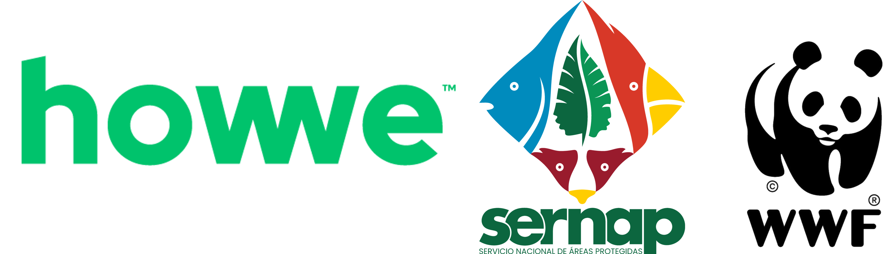

PFP
Geoportal PFP
Áreas Protegidas · Bolivia
⌘K
En colaboración con

M1
Marco espacial base
M2
Distribución de especies
M3
Amenazas críticas
M4
Ecosistemas y agua
M5
Cambio climático
M6
Comunidades y bienestar
Bolivia
›
22 Áreas Protegidas Nacionales
Categorías SERNAP
I.6
200 km
·
-16.85, -63.91
Relieve
Satélite
Calles